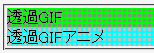
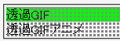

<div style="background:url('../img/img03.gif') lime;">
透過GIF</div>
<div style="background:url('../img/img04.gif') aqua;">
透過GIFアニメ</div>
アニメーションしない透過GIF画像とアニメーションする透過GIF画像の比較です。
N7.02での表示
Opera6.06での表示
Opera6.06では背景に透過GIFアニメーション画像を設定するとbody要素の背景が透過します。ただし、body要素の背景に透過GIFアニメーション画像を設定すると透過部分は黒色になります。
Opera6.06、Opera7.10標準モード、Opera7.10互換モードで不具合の発生が確認されました。